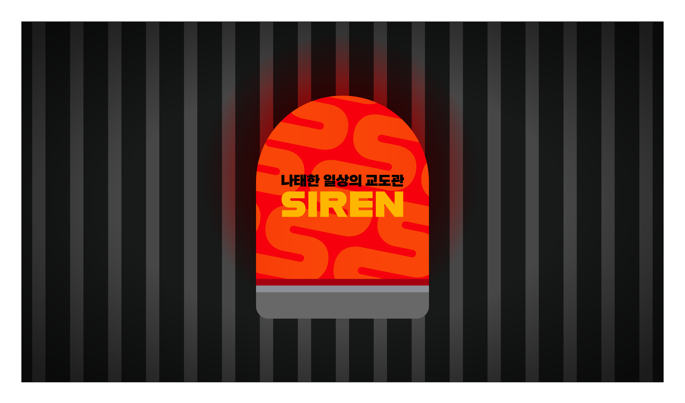
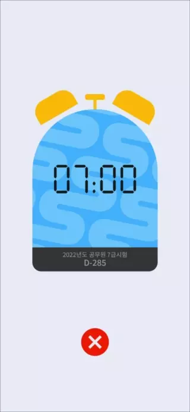
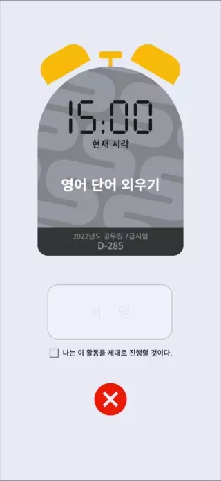

SIREN은 사용자가 목표에 도달하려는 과정에서
방해되는 요소를 차단하며 계획에서 벗어나는 것을 방지하고
게으른 성격과 나쁜 습관을 고치기 위해 만들어진 알람 어플입니다.
개요
나태한 죄를 지어서 오게 된 교도소처럼 나태함에 대한
죄책감을 유발하여 더이상 나태해지지 않도록 합니다.
무조건 부정적인 경험만 느끼는 것이 아니라 통제에 잘 따를 경우
동기부여하고 위로하는 등 적절한 감정적 보상을 제공합니다.
사용자는 앱의 이름에서부터 긴박함을 느끼고 알람 앱이 가하는
통제에 반할 경우 강한 자극이 주어질 것이라는 불안감을 느낍니다.
상황에 맞는 알람
스스로 통제하기 어려운 세가지의 상황에 최적화된
알람을 제공하는 것이 SIREN의 특징입니다.
취침알람잠을 자지 않고 폰을 게속해서
사용하면 강력한 경고 재생

기상알람제시간에 일어나지 않으면
매우 강력한 알람소리 재생
활동알람서명을 하여 활동을
제대로 실시하도록 동기부여
앱 인터페이스
SIREN의 인터페이스를 체험해보세요